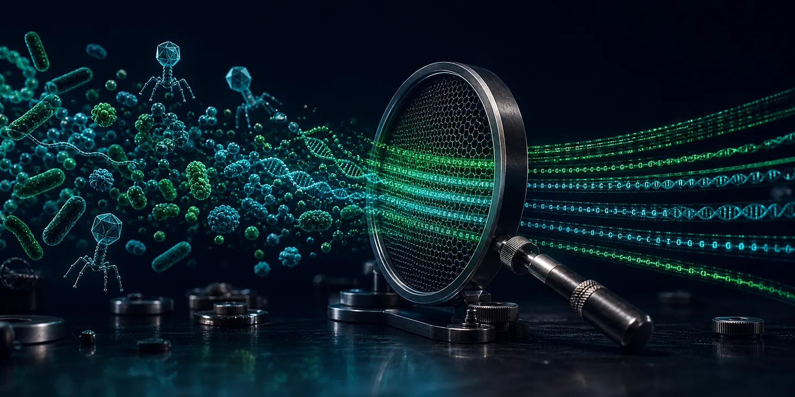
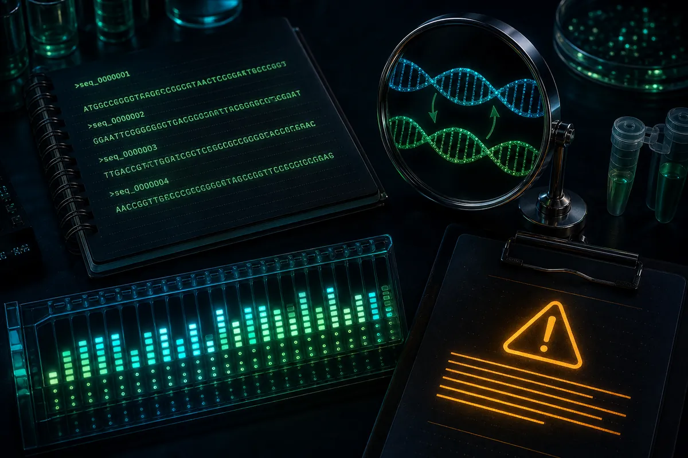

Deduplicate FASTA and FASTQ sequences without losing biological context.
SeqSieve performs exact deduplication in your browser and preserves counts, source IDs, representative choices, duplicate groups, and reproducible reports.

Identical normalized sequences collapse into one representative while every original record remains traceable.
Percent identity or coverage grouping belongs to tools such as CD-HIT, MMseqs2, VSEARCH, or usearch-like workflows.

Input
Upload or paste sequences
Protocol
Deduplication settings
Run
Analyze locally
Files are read by your browser only. SeqSieve has no server, database, analytics, or tracking code.
Results
Provenance-preserving outputs
Unique versus duplicate records
Top duplicate groups
Group size distribution
Preview
First 100 rows
Scientific notes
Exact deduplication, not clustering
What is exact deduplication?
Exact deduplication collapses records that become identical after the selected normalization settings. It does not group similar but non-identical sequences.
Why preserve duplicate mappings?
Mappings retain biological context: source records, original headers, group membership, and counts remain available for downstream interpretation.
When should I not deduplicate?
Avoid deduplication when abundance, sample-specific occurrence, read pairing, quality variation, or haplotype context is the primary signal unless count tables are retained and interpreted carefully.
Deduplication versus clustering
Clustering by percent identity or coverage is an approximate similarity task. Use CD-HIT, MMseqs2, VSEARCH, or usearch-like workflows when non-identical sequences should be grouped.
Reverse-complement-aware deduplication
For DNA/RNA, SeqSieve can use the lexicographically smaller forward or reverse-complement normalized sequence as the comparison key while preserving the selected representative in its original orientation.
FASTQ quality caveats
FASTQ deduplication can alter apparent read abundance. Use the exported count and mapping tables alongside deduplicated reads.
HMM and phage database cleanup
Exact deduplication is useful before HMM preparation, phage protein family curation, BLAST hit cleanup, amplicon dereplication, and microbial genome database maintenance.
Validation